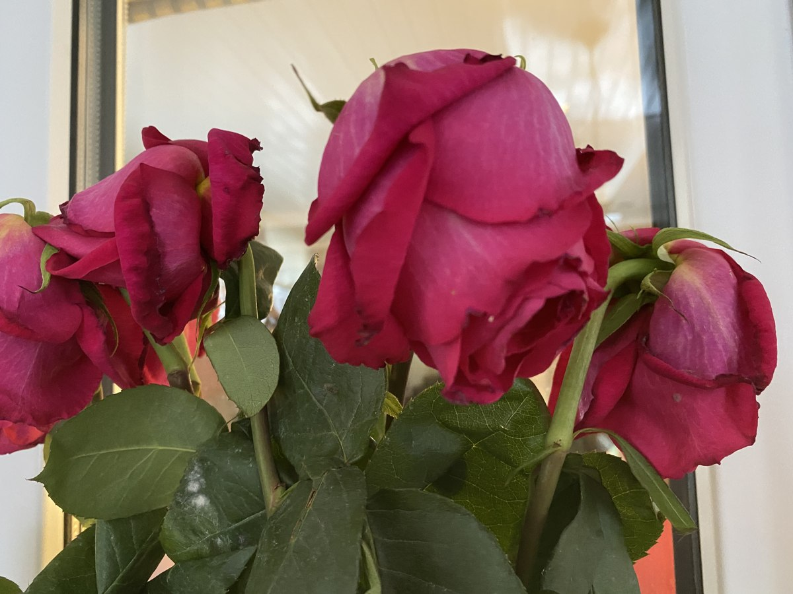
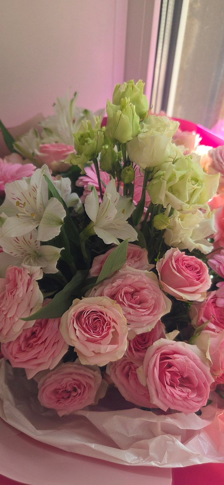

Доставка
Адрес, время и стоимость доставки согласуйте при заказе.
Стоимость уточняйтеМарТа · Рязань
Цветочный магазин на Соборной, 3. Букеты для ваших прогулок, встреч и праздников.
Рязань, Соборная ул., 3
Ежедневно, 08:00–20:00

С вниманием к вашим чувствамВыберите своё настроение
Подберём вариант под повод и бюджет. Свяжитесь с магазином, чтобы узнать актуальное предложение.
Опишите повод, любимые цветы и комфортный бюджет. Доступные варианты и итоговую стоимость магазин подскажет перед заказом.
Публичный прайс в карточке магазина не опубликован. Уточните цены и наличие по телефону.
Узнать стоимость ↗Цена относится только к указанному товару и его описанию. Если количество не указано, уточните единицу продажи у магазина. Сведения проверены 10.11.2026. Цены и ассортимент могут измениться. Прайс на Яндекс Картах ↗
Больше, чем цветы
Выберите, что нужно для вашего случая. Детали заказа и стоимость согласуйте с магазином.
Адрес, время и стоимость доставки согласуйте при заказе.
Стоимость уточняйте
Будем знакомы
Цветочный магазин на Соборной, 3. Букеты для ваших прогулок, встреч и праздников.
Расскажите, кого хотите порадовать, какие оттенки вам нравятся и какой бюджет вы планируете. Состав, упаковку и время получения обсудите с сотрудниками.
Поближе к красоте
Загляните в магазин и найдите настроение для следующего заказа.
Фотографии из карточки магазина на Яндекс Картах. Это примеры работ и атмосферы; текущее наличие уточняйте.
Опыт покупателей
4,6 из 5 · 85 оценок на Яндекс Картах.
Ниже — краткие пересказы выбранных отзывов со ссылками на оригиналы.
Покупательница хвалит композиции, цены и общение с продавцом.
Автор благодарит сотрудницу за отзывчивость и понимание.
Покупательница осталась недовольна тем, как долго сохранились цветы.
Покупатель сообщает о проблемах со свежестью приобретённых роз.
Перед заказом
Позвоните по указанному номеру и обсудите с магазином состав, бюджет и время получения. Заказ считается согласованным после подтверждения сотрудником.
Фотографии показывают примеры из карточки магазина. Сезонность и наличие могут влиять на состав. Попросите подтвердить цветы и упаковку перед заказом.
Цены взяты из опубликованного прайса на дату проверки. Итог зависит от выбранного состава, размера, упаковки и доставки. Подтвердите стоимость у магазина до оплаты.
Рязань, Соборная ул., 3. Используйте кнопку «Построить маршрут» ниже. Режим работы: Ежедневно, 08:00–20:00.
До встречи
Рязань, Соборная ул., 3
Ежедневно, 08:00–20:00